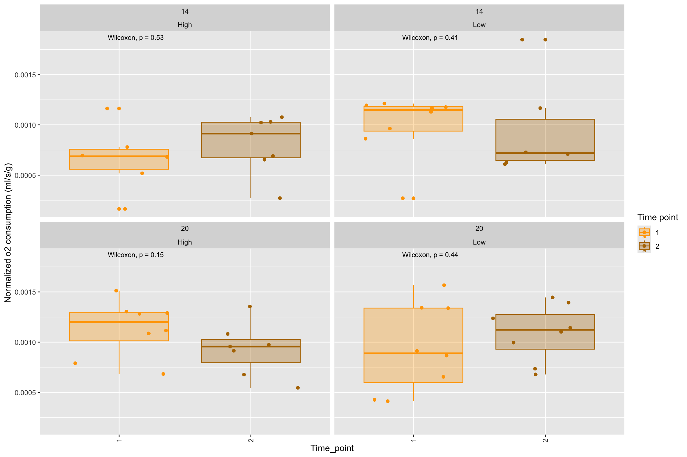
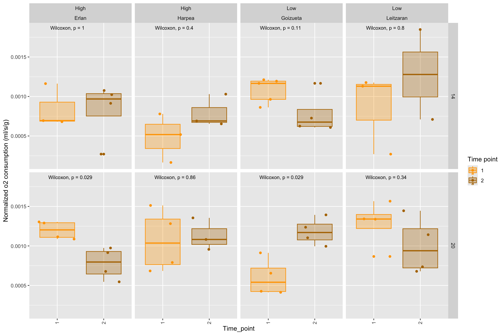

5 Time-point oxygen consumption
calotriton_resp1 %>%
filter(time_point!="0") %>%
ggplot(aes(x = time_point, y = o2_normalized, color=time_point, alpha=0.2)) +
geom_boxplot()+
geom_jitter() +
theme(axis.text.x = element_text(angle = 90, vjust = 0.5, hjust=1))+
facet_wrap(~ factor(temperature)+elevation)+
stat_compare_means(size=3)+
theme(legend.position="right")+
labs(x = "Time_point", y= "Normalized o2 consumption (ml/s/g)")
calotriton_resp1 %>%
filter(time_point!="0") %>%
ggplot(aes(x = time_point, y = o2_normalized, color=time_point, alpha=0.2)) +
geom_boxplot()+
geom_jitter() +
theme(axis.text.x = element_text(angle = 90, vjust = 0.5, hjust=1))+
facet_grid(temperature~factor(elevation)+population)+
stat_compare_means(size=3)+
theme(legend.position="right")+
labs(x = "Time_point", y= "Normalized o2 consumption (ml/s/g)")